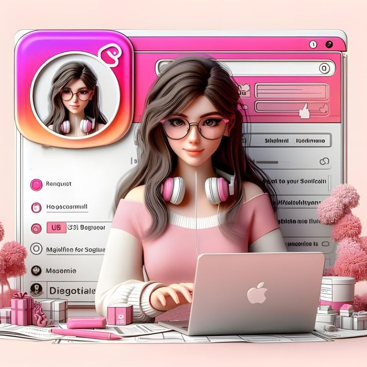
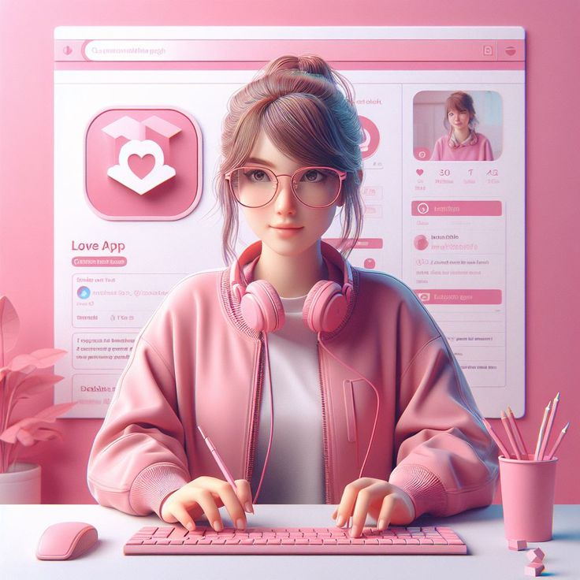
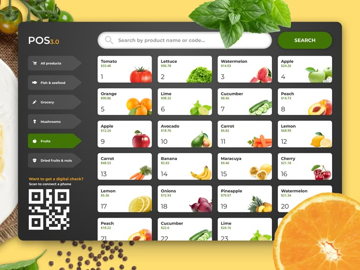
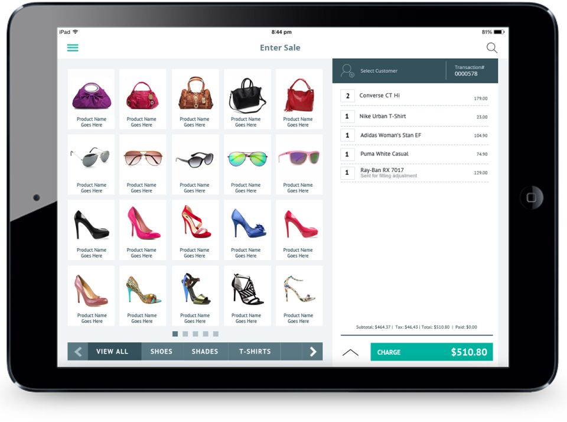
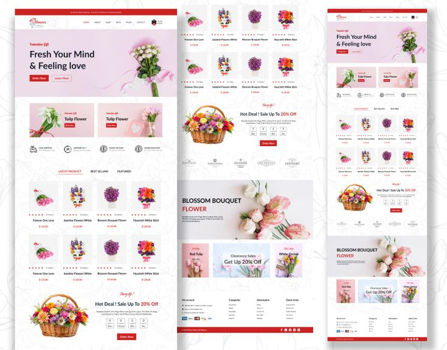

I create intuitive, visually engaging digital experiences using modern frontend technologies and SQL-driven systems.


I am a UX-focused developer who specializes in building responsive, intuitive, and user-friendly systems that prioritize both usability and performance. My approach is centered on creating seamless digital experiences where functionality and design work together harmoniously, ensuring that users can navigate and interact with systems effortlessly across all devices. I pay close attention to detail, from layout structure and visual hierarchy to accessibility and responsiveness, so that every interface feels clean, modern, and purposeful.
In addition to front-end design principles, I also consider the underlying functionality and system efficiency, making sure that the solutions I develop are not only visually appealing but also stable, scalable, and maintainable. I continuously aim to improve user satisfaction by applying UX best practices, user-centered design thinking, and modern development techniques. Ultimately, my goal is to bridge the gap between design and development by delivering digital products that are both aesthetically refined and highly functional in real-world use.
Projects
Dedication
Systems Built

Tech: HTML, CSS, JS, SQL
Improved online grocery shopping with categorized UI and cart system.
View Project →
Tech: HTML, CSS, JS, SQL
Built inventory and sales tracking system for boutique stores.
View Project →
Developed a user-friendly system with product categories and cart functionality.
Created inventory and sales tracking system for small businesses.
Designed a responsive and visually appealing product showcase website.